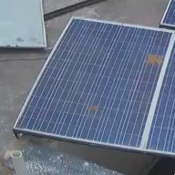
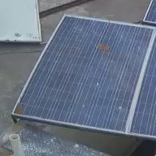
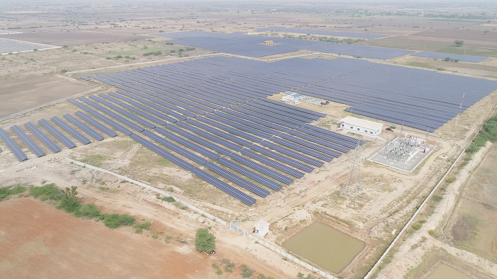
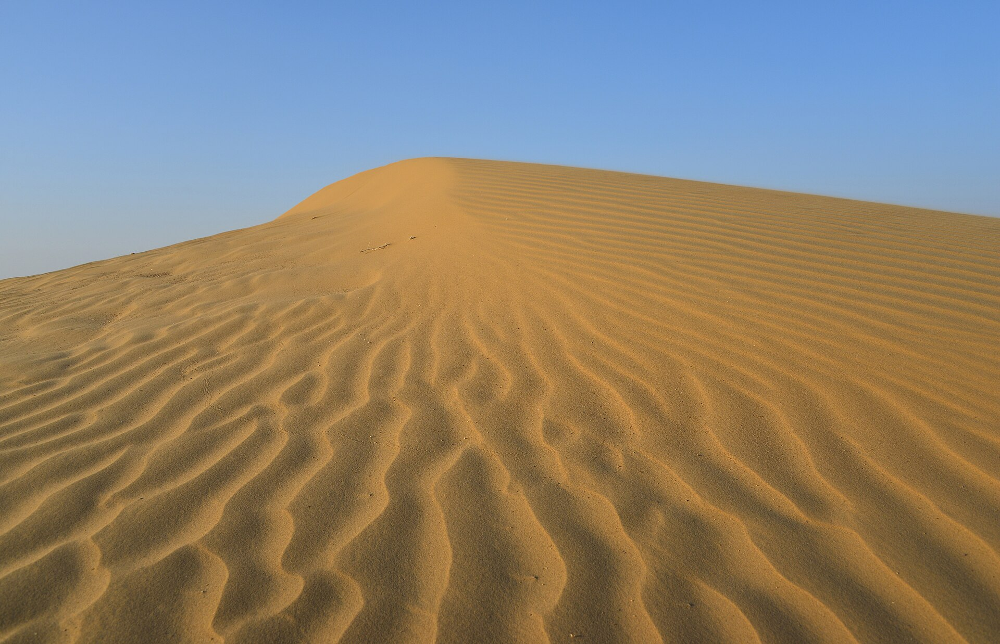

Solara
AI that finds dust on solar panels, measures the power it costs, and says when cleaning is worth it.
Explore the project
Drag to turn the panel. Move the cursor to steer the sun.
Three models, one decision
A camera photographs the panels. Solara sees the dust, works out the power it is costing, and books a wash only when the energy won back is worth more than the water and labour.
-

Detect A MobileNetV2 network reads each photograph and names how dirty the glass is. 79.9% accuracy -

Predict The photograph, sunlight and time of day become the exact share of power lost. 3.8 points average error -

Schedule Each morning, wash or wait, tested on twenty years of weather at five Indian solar parks. 38% cheaper than every 15 days -

About Why dust is a desert problem, the data behind Solara, and who built it. 45,754 photographs, 5 parks